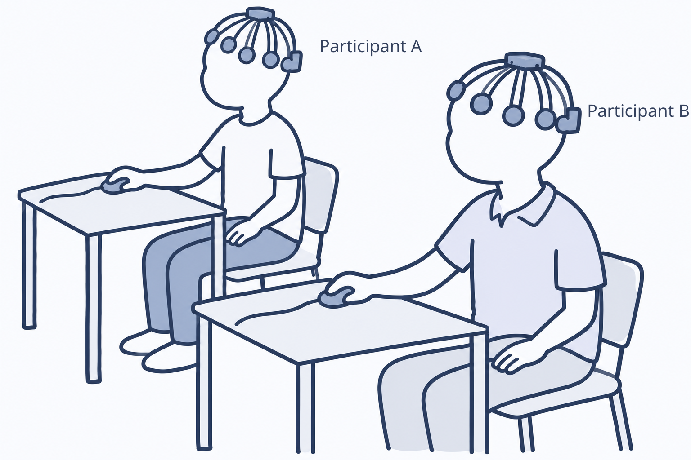
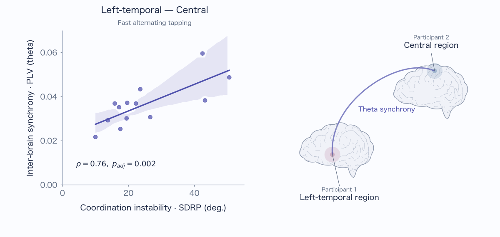
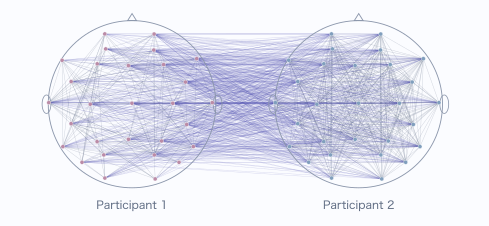
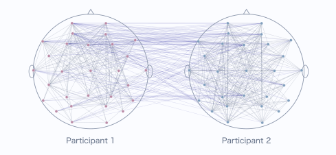

Overview
Inter-brain EEG synchrony during coordinated tapping
When we act in rhythm with another person, we predict their movements and adjust our own. To explore the mechanisms supporting this interpersonal coordination, we focused on synchrony between the two participants’ brain activity (Kurihara et al., 2022, Scientific Reports).
In this study, we used hyperscanning, a method for simultaneously recording brain activity from multiple people. We recorded EEG from two participants performing alternating finger tapping and examined how coordination stability related to inter-brain synchrony (Figure 1).

1. Listen to the reference tempo
Remember the tempo of eight reference beats.
2. Take turns tapping
After the reference stops, maintain the remembered tempo while listening to each other’s taps.
The results showed that, during fast alternating tapping, pairs with less stable coordination had stronger theta-band synchrony between one participant’s left-temporal region and the other’s central region (Figure 2). Instability was measured as the standard deviation of relative phase (SDRP). This positive association suggests that inter-brain synchrony may relate to the demands of adjusting movements to a partner.

We also examined the interpersonal relationship between the two people coordinating their movements (Kurihara et al., 2024, Scientific Reports). We compared stranger and acquaintance pairs using networks that combine within- and between-brain synchrony (Figure 3). Stranger pairs showed higher local efficiency in the theta-band network, indicating more efficient connections among neighboring nodes. These findings suggest that network structure may reflect the relationship between the people coordinating their movements.
Stranger pair

Acquaintance pair

Together, these insights provide clues to understanding the mechanisms underlying the dynamics of inter-brain synchrony that emerge from interpersonal interaction. Successful coordination or a closer relationship does not necessarily entail stronger inter-brain synchrony. To understand these dynamics, it is necessary to consider the social context in which interaction takes place and the processes through which people predict each other’s actions within that context.